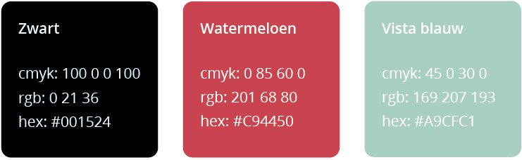
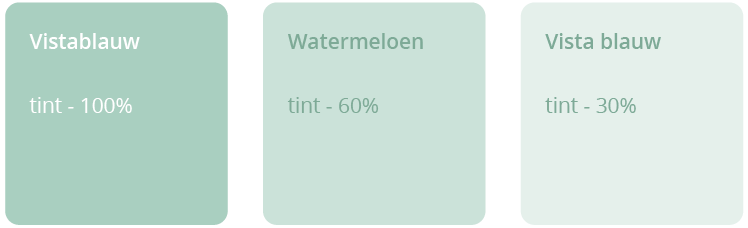

    <!-- Kleuren -->
    <section id="kleuren" class="content-section text-center">
        <div>
            <div class="container">
                <div class="col-md-12">
                    <h2 style="margin-bottom:70px">KLEUREN</h2>
                    
                </div>

                <div class="col-md-12" style="margin-top:30px">
                    
                    <h4 style="color:#e8424f; margin-top:40px">opmerking</h4>
                    <p>De tinten van Vistablauw worden enkel gebruikt als secundaire kleuren,
                        <br>ze mogen nooit als kleur voor het logo worden gebruikt.</p>

                    
                    
                    
                    
                </div>
            </div>
        </div>
        
    </section>